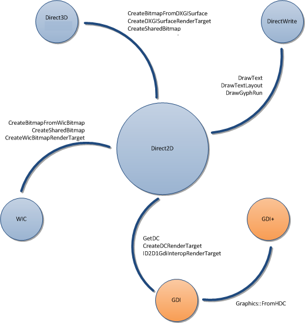

title: Interoperability Overview description: Summarizes the different technologies you can use with Direct2D. ms.assetid: 41f3b908-d218-4a47-bfc3-6a37d38ca26a keywords:
One of Direct2D's key features is enabling interoperability between Direct2D and other rendering platforms so that developers can use the specific strengths of each platform without being forced into compromises by choosing one platform for all needs. This topic summarizes the different platforms with which Direct2D is interoperable. It contains the following sections.
The following diagram summarizes the different platforms with which Direct2D is interoperable and lists some methods and interfaces that provide interoperability.

Direct2D enables two-way interoperability with GDI. You can use an ID2D1DCRenderTarget to write Direct2D content to a GDI device context (DC), or you can use ID2D1GdiInteropRenderTarget to obtain a DC representation of a render target.
For more information and examples, see the Direct2D and GDI Interoperability Overview.
You can use GDI+ with Direct2D in the same manner as GDI. You can use an ID2D1DCRenderTarget to write Direct2D content to the same DC as your GDI+ content. This approach enables you to start adding Direct2D content to applications that primarily render by using GDI+.
You can also use an ID2D1GdiInteropRenderTarget to provide access to a GDI DC that writes by using Direct2D, and then use the FromHDC method to create a object. This approach is useful for applications that primarily render with Direct2D, but have an extensibility model or other legacy content that requires the ability to render with GDI+.
Direct2D can use a DXGI surface render target (created by the CreateDxgiSurfaceRender method) to write to an IDXGISurface. This action enables you to add 2-D backgrounds and interfaces to 3-D scenes and use Direct2D content as a texture for a 3-D model. Direct2D can also take an IDXGISurface and use the CreateSharedBitmap method to create a bitmap representation.
For more information and examples, see the Direct2D and Direct3D Interoperability Overview.
Direct2D is tightly integrated with DirectWrite. Direct2D makes it easy to render DirectWrite content by providing the DrawText, DrawTextLayout, and DrawGlyphRun methods.
Direct2D provides the CreateBitmapFromWicBitmap, CreateSharedBitmap, and CreateWicBitmapRenderTarget methods for manipulating WIC bitmaps.
Direct2D and GDI Interoperability Overview
Direct2D and Direct3D Interoperability Overview
Â
Â